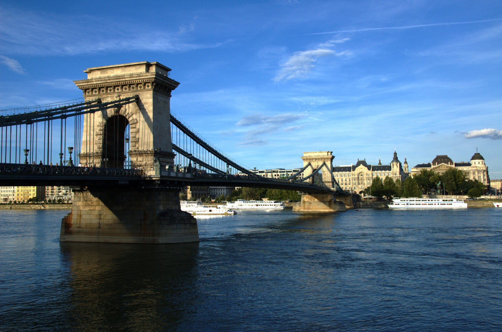

Széchenyi lánchíd
A Széchenyi lánchíd (a köznyelvben általában csak Lánchíd) a Buda és Pest közötti állandó összeköttetést biztosító legrégibb,
legismertebb híd a Dunán, a magyar főváros egyik jelképe, egyben az első állandó híd a teljes magyarországi Duna-szakaszon.
Építését gróf Széchenyi István kezdeményezte és finanszírozását báró Sina György szervezte,
a legnagyobb adományt is ő adta a klasszicista stílusban tervezett híd megépítésére.
A második világháborúban felrobbantották Budapest összes hídját, 1945. január 18-án, utolsókként, az Erzsébet hidat és a Lánchidat.
A Lánchíd a legkeskenyebb forgalmi útpályával rendelkező budapesti híd:
a gyalogosforgalom számára létesített két járdán kívül mindössze 2x1 sáv áll a járműforgalom rendelkezésére.
Ezen kívül a Lánchíd az egyetlen közforgalmú budapesti híd, amelyikhez nem kapcsolódnak közvetlenül szélesebb főútvonalak,
helyettük egy-egy körforgalmú tér található mindkét hídfőjénél, a Széchenyi tér Pesten és a Clark Ádám tér Budán.
Teljes hosszúsága: 380 m.
Szélesség: 14,8 m.
Sávok száma: 2×1.
